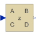

StateSpaceDiscrete State Space block |

|
Information
This information is part of the Modelica Standard Library maintained by the Modelica Association.
The discrete state space block defines the relation between the input u and the output y in state space form:
x = A * pre(x) + B * u
y = C * pre(x) + D * u
where pre(x) is the value of the discrete state x at the previous sample time instant. The input is a vector of length nu, the output is a vector of length ny and nx is the number of states. Accordingly
A has the dimension: A(nx,nx),
B has the dimension: B(nx,nu),
C has the dimension: C(ny,nx),
D has the dimension: D(ny,nu)
Example:
parameter: A = [0.12, 2;3, 1.5]
parameter: B = [2, 7;3, 1]
parameter: C = [0.1, 2]
parameter: D = zeros(ny,nu)
results in the following equations:
[x[1]] [0.12 2.00] [pre(x[1])] [2.0 7.0] [u[1]]
[ ] = [ ]*[ ] + [ ]*[ ]
[x[2]] [3.00 1.50] [pre(x[2])] [0.1 2.0] [u[2]]
[pre(x[1])] [u[1]]
y[1] = [0.1 2.0] * [ ] + [0 0] * [ ]
[pre(x[2])] [u[2]]
Parameters (8)
| samplePeriod |
Value: Type: Time (s) Description: Sample period of component |
|---|---|
| startTime |
Value: 0 Type: Time (s) Description: First sample time instant |
| nin |
Value: size(B, 2) Type: Integer Description: Number of inputs |
| nout |
Value: size(C, 1) Type: Integer Description: Number of outputs |
| A |
Value: [1, 0; 0, 1] Type: Real[:,size(A, 1)] Description: Matrix A of state space model |
| B |
Value: [1; 1] Type: Real[size(A, 1),:] Description: Matrix B of state space model |
| C |
Value: [1, 1] Type: Real[:,size(A, 1)] Description: Matrix C of state space model |
| D |
Value: zeros(size(C, 1), size(B, 2)) Type: Real[size(C, 1),size(B, 2)] Description: Matrix D of state space model |
Outputs (3)
| sampleTrigger |
Type: Boolean Description: True, if sample time instant |
|---|---|
| firstTrigger |
Type: Boolean Description: Rising edge signals first sample instant |
| x |
Type: Real[size(A, 1)] Description: State vector |
Connectors (2)
| u |
Type: RealInput[nin] Description: Connector of Real input signals |
|
|---|---|---|
| y |
Type: RealOutput[nout] Description: Connector of Real output signals |